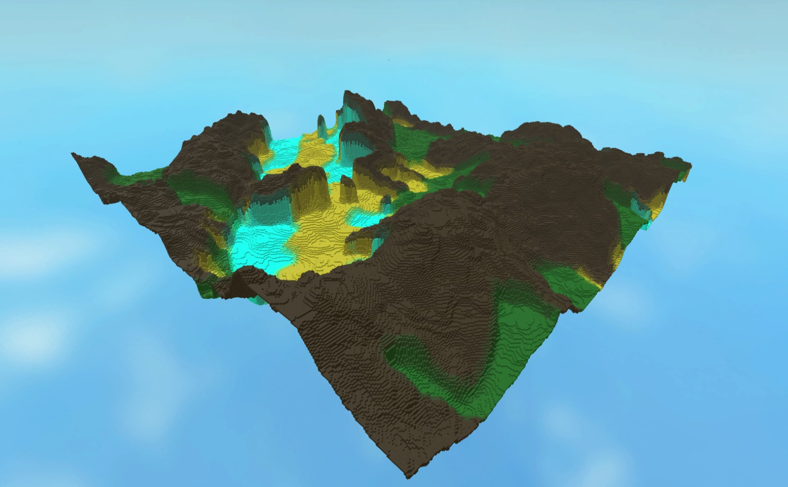
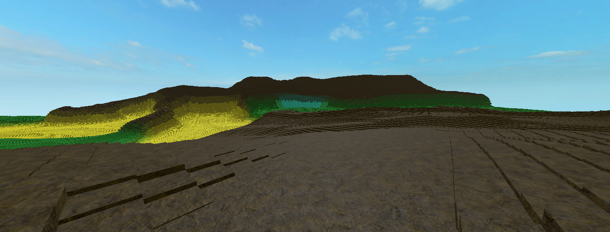
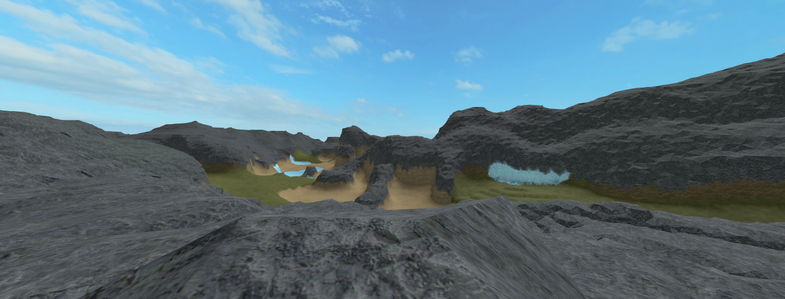
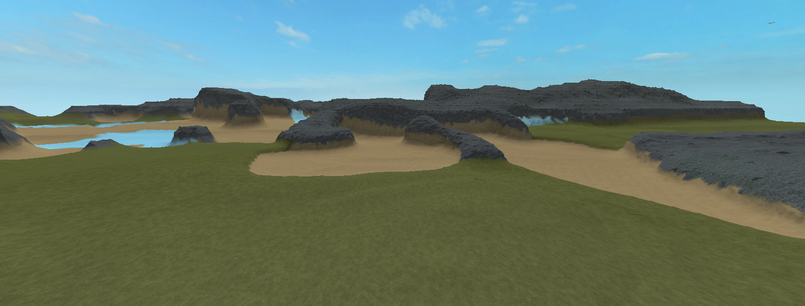

Layered noise
Continentalness, peaks, erosion, temperature and humidity feed terrain height and biome classification.
WorldWeaver is a procedural terrain generator built around layered noise, biome selection, interpolation, blending and optional Roblox Terrain rendering.

Continentalness, peaks, erosion, temperature and humidity feed terrain height and biome classification.
Each biome defines ranges over the configured noises, plus its own amplitude, color and material.
Use anchored Parts for block-style terrain or Roblox's built-in Terrain for large maps.
Keep the three WorldWeaver modules together, create a settings instance, build its cache, then hand it to the generator.
For a simple Argon project, keep the modules under src/ServerScriptService/WorldWeaver/. The Generator already expects Painting beside it.
src/
└── ServerScriptService/
└── WorldWeaver/
├── Generator.luau
├── Painting.luau
└── Settings.luauSettings.luau waits for ReplicatedStorage.Events.gridLoaded and terrainRendered. Both are fired as BindableEvents by the generator.
ReplicatedStorage/
└── Events/
├── gridLoaded
└── terrainRenderedRequire the modules, create a settings object, change the values you want, build the cache, then call Generator.generateTerrain(settings).
local WorldWeaver = script.Parent.WorldWeaver
local Settings = require(WorldWeaver.Settings)
local Generator = require(WorldWeaver.Generator)
local settings = Settings.new()
settings.Seed = 42
settings.MapWidth = 500
settings.MapBreadth = 500
settings:BuildCache()
Generator.generateTerrain(settings)Argon supports two-way syncing and building Roblox projects. The layout below deliberately maps your source tree to Roblox services while keeping WorldWeaver self-contained.
WorldWeaverGame/
├── default.project.json
├── src/
│ ├── ServerScriptService/
│ │ ├── WorldWeaver/
│ │ │ ├── Generator.luau
│ │ │ ├── Painting.luau
│ │ │ └── Settings.luau
│ │ └── Main.server.luau
│ └── ReplicatedStorage/
│ └── Events/
│ ├── gridLoaded
│ └── terrainRendered
└── README.mddefault.project.json{
"name": "WorldWeaverGame",
"tree": {
"$className": "DataModel",
"ServerScriptService": {
"$path": "src/ServerScriptService"
},
"ReplicatedStorage": {
"$path": "src/ReplicatedStorage"
}
}
}This keeps the requested src/ServerScriptService structure while explicitly mapping it to the Roblox service.
Install the Argon CLI and Roblox Studio plugin from the official project.
argon.wiki ↗Open the folder in your editor and start Argon's sync workflow for the project.
argon studioWhen you want a generated Roblox project artifact rather than a live sync session, use Argon's build command.
argon buildThese are the settings you will normally use to shape terrain, control rendering, tune blending, configure noise, define biomes, and manage generation performance.
NameName for the settings preset.Give presets clear names when you keep multiple world configurations.Terrain_1TerrainFolderParent for generated chunk Models when Parts are used.Point it at a dedicated workspace folder such as workspace.Debris; keep generated content isolated.workspace.DebrisgridLoadedEventBindableEvent fired after the height/biome grid is initialized.Create ReplicatedStorage.Events.gridLoaded before generation starts.Events.gridLoadedterrainRenderedEventBindableEvent fired after rendering completes.Use it to trigger post-generation setup rather than guessing how long generation will take.Events.terrainRenderedScaleBase spatial scale fed into Roblox noise. Larger values make terrain change more gradually.Increase for broad landforms; decrease for more frequent variation. Tune alongside each noise frequency.500SeedThird noise coordinate that changes the generated world pattern.Keep a fixed seed for production maps; change it when exploring variants.2PersistanceWeight applied to successive noise layers. Higher values preserve more higher-frequency influence.Start around 0.6; lower values produce calmer terrain, higher values can become rugged.0.6startXWorld-space X origin of the generated map.Set it once per map preset and keep it aligned with startZ and your intended center.-100startZWorld-space Z origin of the generated map.Keep the map origin predictable so saved presets reproduce the same placement.-100MapWidthGenerated extent along X.Make it equal to MapBreadth when possible and align it with the division size.500MapBreadthGenerated extent along Z.Match MapWidth for the simplest, most predictable grid layout.500VoxelSizeSize of each generated Part or the base size used by Roblox Terrain fills.Keep it at 4 unless you deliberately want coarser terrain.4useInBuiltTerrainSwitches rendering from anchored Parts to workspace.Terrain.Prefer true for very large maps; use Parts when you want the block-based representation.falsesmoothifyChooses smooth terrain calculations instead of voxel-snapped block heights.Use true when you want smoother landforms; compare the visual result against fastBlend.falsesmoothifyScaleAlternate noise scale used when smoothify is enabled.Leave at the derived default unless smooth terrain needs a different spatial character.Scale × 2smoothificationSizeDerived fill size used for Roblox Terrain when smooth rendering is enabled.Do not edit directly; it is calculated from VoxelSize.derivedblendOnBlends biome amplitudes so neighboring biomes influence terrain shape.Keep enabled for biome transitions; disable only when you specifically want hard, independent biome heights.truefastBlendSelects the cheaper two-stage blending path.Good default for large maps; normal blending can create broader neighborhood influence.trueblendThreshNeighborhood radius used by normal blending.Keep modest; the source recommends not going beyond roughly 10–15.10fastBlendThreshNeighborhood radius used by fast blending.Increase carefully because larger radii cost more work.4blendColorThreshDistance between samples used to average biome colors at render time.Keep small and test visually; it affects color transitions, not height blending.4fallOffMultiplies terrain height toward the edge of the map using the falloff function.Useful for island-like maps. Keep the default disabled until the terrain shape is otherwise stable.falsefallOffStartNormalized distance from center at which falloff begins.Values are intended in the 0–1 range; 0.35 leaves the inner area unchanged.0.35fallOffEndNormalized distance where falloff reaches zero.Keep at or above fallOffStart; 1.0 fades the map fully at its outer boundary.1.0GridDIVWidth/breadth of each grid-generation division.Align it with map dimensions when practical; it controls how the height grid is partitioned.600GridCAPMaximum number of grid divisions allowed to run concurrently.Start low. Raise only after profiling server generation time and memory.2CaveDisabledMapDIVDivision size used while rendering terrain blocks/fills.Make MapWidth and MapBreadth multiples of it, or keep both dimensions below it, to avoid awkward partial divisions.500RenderThreadCapMaximum number of render divisions allowed concurrently.Keep conservative; rendering is the expensive phase, especially with Parts.1CaveFreqFrequency multiplier for the 3D density noise used during terrain generation.Increase for more rapid density variation; change only after understanding the visual impact.4NoiseNamesMaps short nicknames to noise names and priorities.Keep the existing default noises unless you know the downstream tables and biome definitions will be updated together.5 entriesNoiseDetailsDefines amplitude and frequency for each configured noise.When adding a noise, also add interpolation values and, if relevant, biome ranges.5 entriesInterpolationValuesMaps normalized noise values to terrain-height contributions using linear interpolation.Keep keys ordered conceptually from 0 to 1 and cover the range; use it as the main tool for shaping landforms.5 curvesBiomesOrdered list of biome names considered by biome scoring.Every name needs a matching entry in BiomeDetails.4 entriesBiomeDetailsDefines noise ranges, amplitude, color and material for each biome.Keep range definitions coherent and always provide amp, Color and Material.4 entriesimplementBiomeScoringMultiplies terrain contribution by the biome match score.Treat as an experimental visual control; compare against the simpler default.falsesharpnessBiomeDefactorControls how strongly biome amplitude is reduced when sharper biome boundaries are enabled.Keep it near 1. Increase it for a softer transition in terrain height between biome regions.1Settings.luau are calculated from other settings or are used internally by the generator. Unless you are extending WorldWeaver itself, leave those values at their defaults.WorldWeaver builds terrain from five named noise signals, each with a frequency, amplitude, and interpolation curve that maps noise to height. The Name and Priority parameters manage these signals, higher priority values reduce a signal's influence. The contribution decay across successive layers is controlled by Settings.Persistance.
Low-frequency landmass structure.
Higher-frequency height reduction/detail.
Fine-scale signal used heavily for biome identity.
Major elevation driver in the default terrain curve.
Biome signal with a moderate terrain contribution.
Settings.NoiseNames.Moist = {"Moisture", 6}
Settings.NoiseDetails[Settings.NoiseNames.Moist[1]] = {
amp = 8,
freq = 12,
}
Settings.InterpolationValues[Settings.NoiseNames.Moist[1]] = {
[0] = -4,
[0.5] = 0,
[1] = 8,
}BuildCache() sorts interpolation keys and prepares the ordered noise list used by the generator. Call it after editing noise/interpolation configuration and before generating.
Painting.SetBiome checks each configured biome against the current noise values, calculates a penalty for values outside each range, and chooses the biome with the lowest total penalty.
Continentalness 0–0.5, Temperature 0–0.3, Erosion 0–1, PV 0–0.5. Amplitude 1.7.
GrassContinentalness 0–0.5, Temperature 0.3–1, Erosion 0–1, PV 0.5–1. Amplitude 2.6.
RockContinentalness 0.5–1, Temperature 0.5–1, Erosion 0–0.5, PV 0–0.4. Amplitude 1.
SandContinentalness 0.5–1, Temperature 0–0.3, Erosion 0–1, PV 0–0.5. Amplitude 0.8.
IceBiomes and BiomeDetails. Keep the noise keys in BiomeDetails aligned with your NoiseNames table. The biome's amp, Color and Material are part of rendering and height shaping, not decoration alone.Start around 300–500 studs per axis while tuning. Maps around 600×600 or 800×800 are already substantial.
Keep MapWidth and MapBreadth equal where practical, and make them multiples of the rendering division or smaller than it.
It is recommended to have useInBuiltTerrain = true for maps around 2000×2000 studs or more, with fastBlend = true as a strong companion.
GridCAP controls grid work while RenderThreadCap controls rendering work. Increasing both can raise throughput but also increases pressure on the server.
Keep a test server script with saved presets. This makes iteration faster than repeatedly rebuilding a final map before the shape is stable.
Settings.new()Creates an independent settings object using the Settings table as its metatable.
Settings:BuildCache()Builds the ordered noise and interpolation caches required by generation.
Generator.generateTerrain(settings)Runs the grid phase, waits for it to complete, renders divisions, clears the height grid and fires the completion event.
Painting.SetBiome(arr, settings)Selects the best matching biome and returns the biome name plus its normalized inverse score.
Settings:GetInterpolatedAmpValue(value, name)Linearly interpolates a configured noise curve.
Settings:ValueInRange(range, num)Checks a value against a NumberRange and returns whether the range exists plus its distance penalty.
BuildCache() after changing interpolation or noise configuration and before generating terrain.Use these combinations to compare blocky and smooth terrain, with either Parts or Roblox's built-in Terrain renderer.


